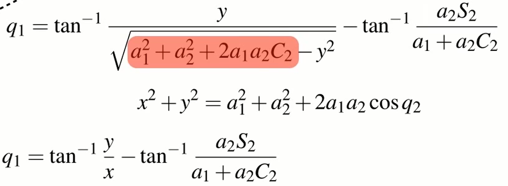

Inverse kinematics for a 2-joint robot arm using geometry 翻譯 <<
Previous Next >> W16
Inverse kinematics for a 2-joint robot arm using algebra 翻譯
這兩部影片是解釋如果給定XY座標二連桿要分別轉多少度才能達到指定座標的算法
這個方法是使用代數
Here we have the same two link robot as we just looked at but this time we're going to solve it using an analytical approach,
在這裡，我們有與剛才看到的相同的兩個連桿，但這次我們將使用分析方法來解決，
that is we're going to rely much more on algebra,
我們會頻繁的使用代數，
particular linear algebra rather than geometry.
特定的線性代數而不是幾何。
We have an expression E, which is the homogeneous transformation which represents the pose of the robots endefector and we looked at this in the last lecture,
我們有一個表達式 E，它是表示連桿最後的齊次變換式，我們在上一課中看到了這一點，
we can write the endefector pose as a sequence of elementary homogeneous transformations.
我們可以將最終位置寫為一系列基本齊次變換式。
A rotation by Q1, a translation along the X direction by A1, a rotation by Q2 and then a translation in the X direction by A2.
Q1 旋轉，A1 沿 X 方向平移，Q2 旋轉，然後 A2 沿 X 方向平移。
If I expand this out, multiply all the transformations together,
如果我將其展開，將所有變換相乘，
I get the expression shown here; a three by three homogeneous transformation
matrix representing the pose of the robot's endefector.
就會得到此處所示的表達式 ;它是一個三乘三的齊次變換矩陣，表示連桿的最終的位置。
Now for this particular two link robot, we are only interested in the position of its endefector, it's X and Y co-ordinate and they are these two elements within the homogeneous
transformation matrix, so I'm going to copy those out.
現在這個特殊的連桿，我們只要取末端位置，它是 X 和 Y 坐標，它們是同質內的這兩個元素轉換矩陣，所以我要把它們複製出來。
So here again is our expression for X and Y and what we're going to do is
a fairly common trick, we're going to square and add these two equations and I get a relationship that looks like this.
所以這裡又是我們對 X 和 Y 的表達式，我們要做的是一個相當常見的技巧，我們要平方然後加這兩個方程式，我得到一個看起來像這樣的關係。
Now I can solve for the joint angle Q2 in terms of the endefector pose X and Y and the robot's constants A1 and A2.
現在我可以根據機器手臂姿勢 X 和 Y 以及機器人的常數 A1 和 A2 來求解關節角度 Q2。
Now what I'm going to do is apply the sum of angles identity.
現在要做的是應用角度恆等式。
I'm going to expand these terms, sine of Q1 plus Q2 or cos of Q1 plus
Q2 and to make life a little bit easier,
I'm going to make some substations, so where ever I had cos Q2,
I'm going to write C2 and where ever I had sine Q2, I’m going to write S2.
我將擴展這項，Q1 的正弦加 Q2 或 Q1 的餘弦加 Q2 為了讓式子更簡單，
It's a fairly common shorthand when people are looking at robot kinematic equations.
當人們查看機器人運動學方程時，這是一個相當常見的快速記憶法。
And here are the equations after making those substitutions. Looking at these two equations,
這是進行這些替換後的方程式。 看這兩個方程，
I can see that they fall into a very well known form and for that form there is a very well known solution.
我可以看到它們屬於一個眾所周知的形式，對於這種形式，有一個淺顯易見的解決方法。
So I'm going to consider just one of the equations,
the equation for Y and using our well known identity and it's solution,
所以我會只考慮其中一個方程，
Y的方程並使用我們眾所周知的表達式和它的解決方案，
I can determine the values for the variables little a, little b and little c and once I've determined those,
我可以確定變量小 a、小 b 和小 c 的值，一旦我確定了這些值，
then I can just write down the solution for Q1,
which is the equivalent of theta in this particular case.
如果我確定了這些，我就可以寫下 Q1 的解決方程式，在這種特殊情況下，x 就等於 θ。
Here again is our expression for Q1,
這裡再次是我們對 Q1 的表達式，
copied over from the previous slide and we may remember from earlier in our workings that we determined this particular relationship;
從上一張投影片複製過來，我們可能記得在我們工作的早期，我們確定了這種特殊的關係；
X squared plus Y squared is equal to this particular complex expression.
X 平方加 Y 平方等於這個特定的複雜表達式。
So I can substitute that in and do some simplification and I end up with this
slightly less complex expression for Q1.
所以我可以將他替換然後進行一些簡化，最終得到 Q1 的這個稍微不那麼複雜的表達式。
And it is the same expression that I got following the geometric approach in the previous section.
這與我在上一節中遵循幾何方法得到的表達式相同。
以下是本影片倒出來的公式：

Inverse kinematics for a 2-joint robot arm using geometry 翻譯 <<
Previous Next >> W16